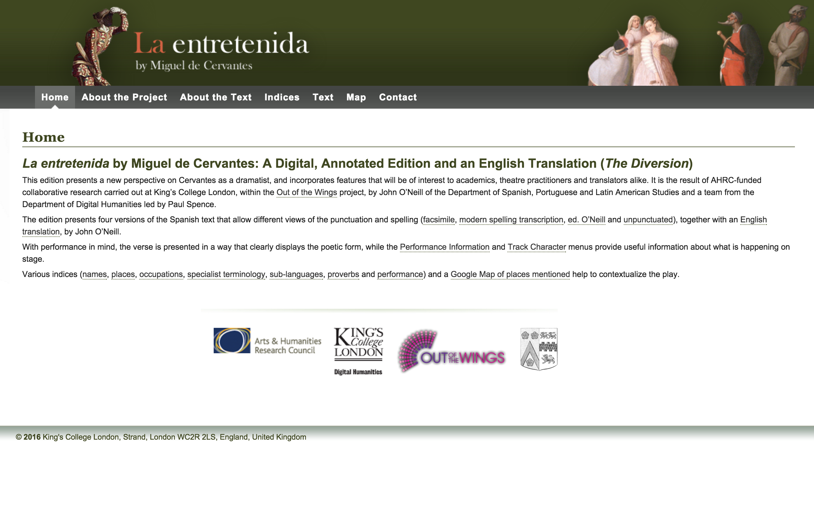
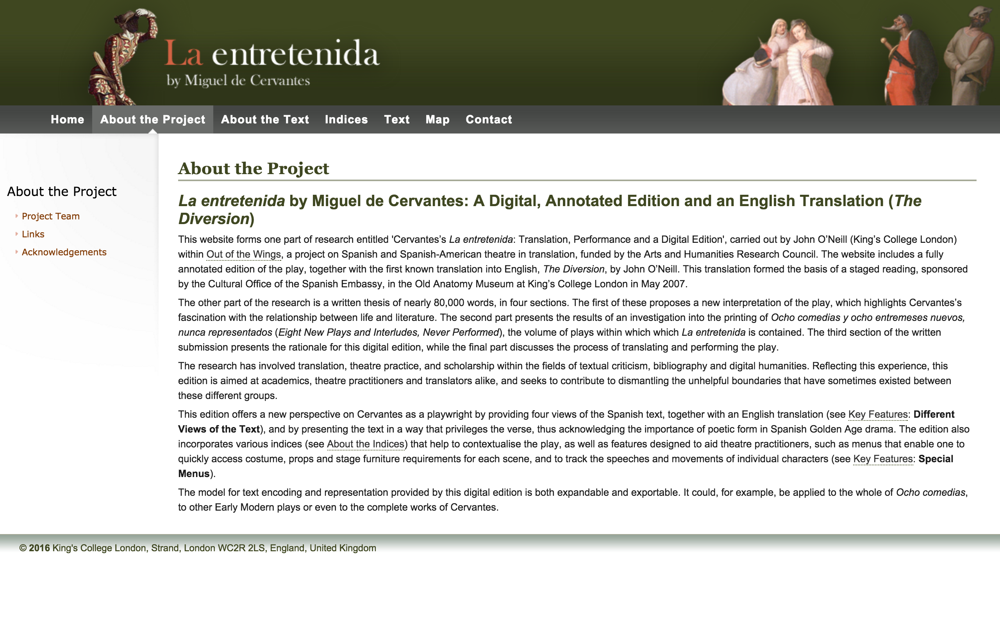
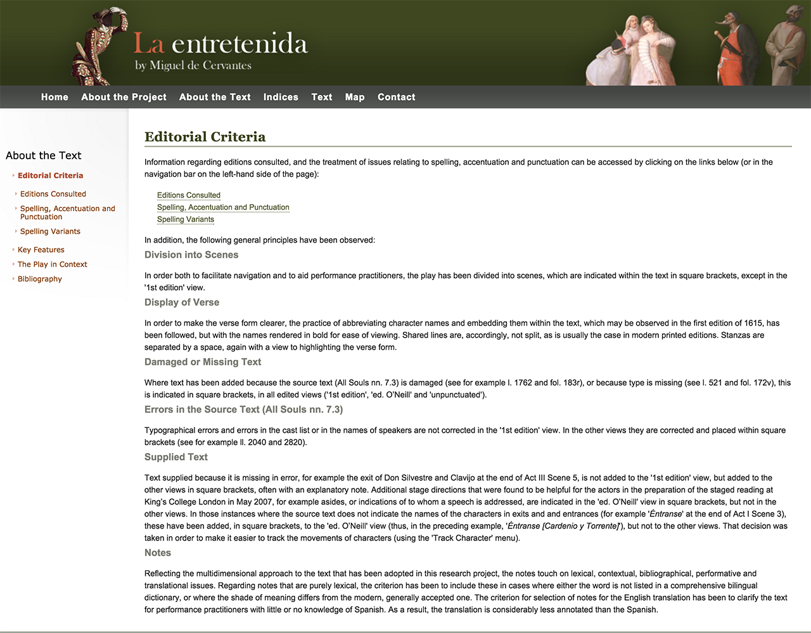
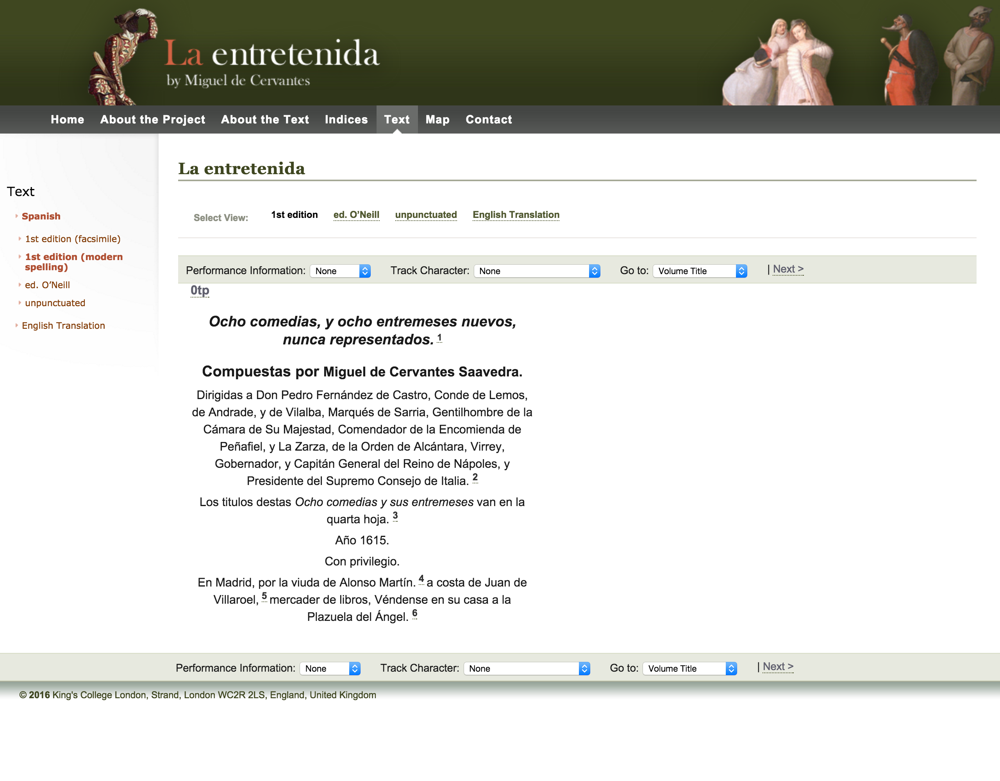
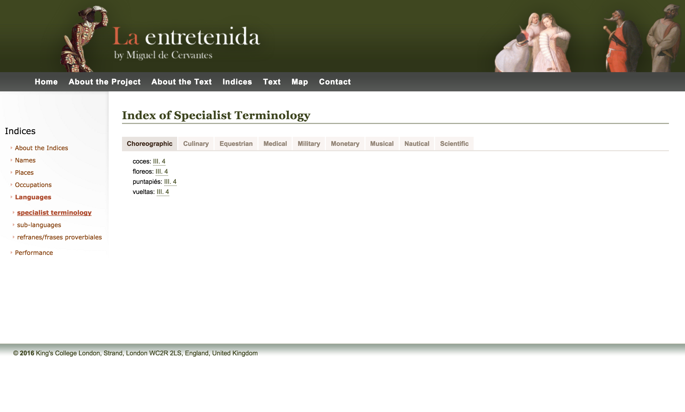
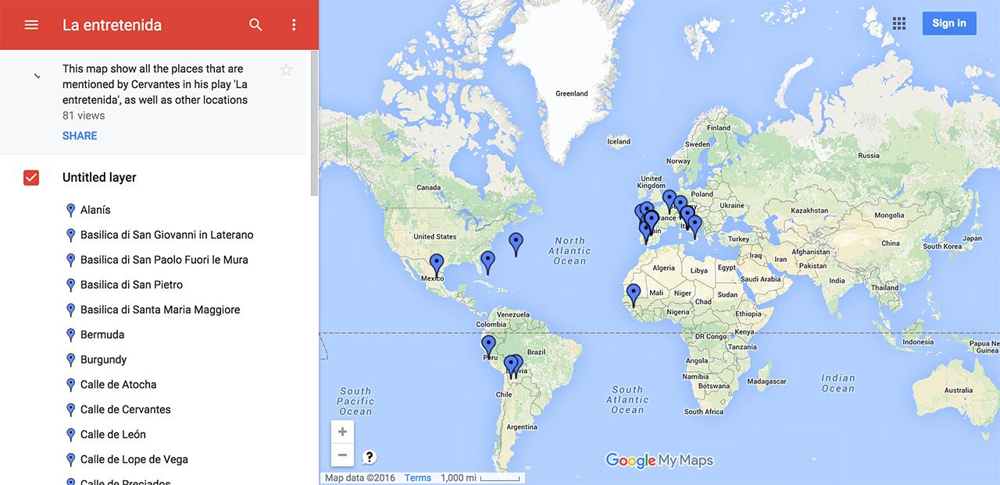
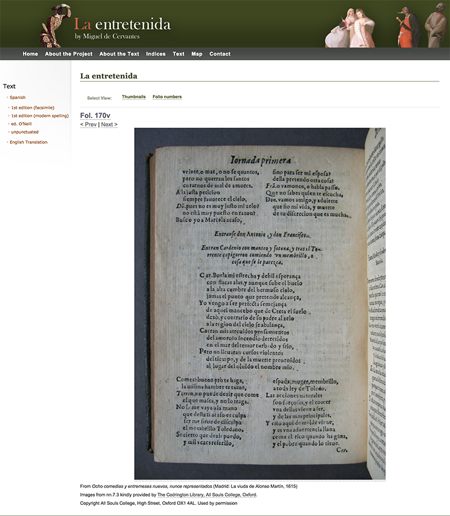

Cervantes and the Golden Age Theatre: First Attempts Towards a Digital Scholarly Editorial Model
Table of Contents
Abstract
For the first time, La Entretenida offers a digital scholarly edition of a theatrical text written by Miguel de Cervantes. From a scholarly perspective, the edition has a considerable value offering a brief contextualization of the play, a clear set of editorial criteria, and an edited text that provides different views, including an English translation. From the digital perspective, it represents a solid model that could be exportable to other similar works; nonetheless, some improvements could be performed, such as making the underlying encoded textual data available and adding technical documentation.
Introduction: the Revival of the Spanish Golden Age
Miguel de Cervantes is well-known as a novelist, but he also clearly had a vocation as a dramatist. In 1615, just one year before his death, he published a group of plays under the title Ocho comedias y ocho entremeses nuevos, nunca representados (Eight New Plays and Eight Interludes, Never Performed), by the press of the Viuda de Antonio Martín in Madrid.
As the same Cervantes explains in his ‘Prologue to the Reader’, he had written the plays years before, but he did not find a publisher willing to buy them. The times were changing, and Lope de Vega was reshaping the principles of drama composition. Cervantes acknowledges his reputation as a good writer of prose, as opposed to his verse: ‘At the time a bookseller informed me that he would have bought them, had a actor-manager of some note not told him that much could be expected of my prose, but of my verse nothing.’ Nonetheless, Cervantes, reading once again his plays, decided to deliver them to a bookseller in order to finally publish them. This is the reason behind the second part of the title, ‘Never Performed’.
La Entretenida is one of the eight plays of the publication, and it narrates several parallel love stories among servants and nobility, in which none end in marriage. The new digital edition was launched in 2013, and its main achievement is that it is the first one in the field of Spanish Golden Age theatre (late XVI to XVII centuries). It offers different editorial versions of the Spanish text as well as an English translation, all accompanied by critical notes, a rich section of indices, and a Google map tracing the places mentioned in the play.
The digital edition is the result of a doctoral dissertation entitled Cervantes’s La Entretenida: Translation, Performance and a Digital Edition, carried out by John O'Neill.1 As stated in the section ‘About the Project’, the work had two different outcomes: the website and the written dissertation. The latter was divided into four main parts: a study highlighting the new approach to Cervantes’s theatrical production and his ‘fascination with the relationship between life and literature’, materialized in the effects of reality through the characterization of the servants and the nobility; a bibliographic investigation about the materiality and textual tradition of the Ocho Comedias; a rationale on the making of the digital edition; and a final study on the process of translation and performing of the play, which had an actual staged reading sponsored by the Cultural Office of the Spanish Embassy, taking place at King’s College London (KCL).
John O’Neill is the principal researcher, working under the auspices of two professors from the Department of Spanish, Portuguese and Latin American Studies at KCL, Catherine Boyle, and Julian Weiss. Furthermore, the project had the collaboration of the Department of Digital Humanities, lead by Paul Spence, and with the participation of Elena Pierazzo, Paul Vetch, José Miguel Monteiro Vieira, Bea Caballero, Raffaele Vigilanti, and Charlotte Tupman. This initiative was supported by and registered with Out of the wings 2, a three-year project funded by the Arts and Humanities Research Council, in collaboration with Queen’s University (Belfast) and the University of Oxford, which consisted of a digital resource offering a wide range of theatrical texts from Spain and Spanish America for English-speaking researchers and theatre professionals. The website is hosted by the Out of the Wings project and is maintained by the KCL.

In recent years, Golden Age texts have seen a great revival, with Cervantes obviously one of the most studied authors. Two examples of his work that have received a lot of attention include a compilation of all documentary and facsimile editions of the Quixote – the Electronic Variorum Edition of the Quixote (EVE-DQ) – and an interactive digital edition of the classic, the Quijote Interactivo (2010-2015). Many other interesting projects dealing especially with the theatrical performance of texts have seen the light, in which Lope de Vega is the most studied and published playwright. A few examples include Mujeres y criados. Edición en línea (2014) and La Dama Boba edition (2015). It goes without saying that scholars also have access to a great amount of material in digital libraries such as the Manos teatrales 3 or the Biblioteca Digital Artelope.4
Previous Attempts and General Overview
La Entretenida is a single play published conjointly in 1615 with seven other plays and eight interludes, in which each play constitutes an independent work. The publication of the sixteen plays would certainly have been too much for the scope of a PhD thesis. In any case, it is worth noticing, as highlighted by the editor, that the proposed model could be applicable to the rest of the works of the Ocho comedias, and – I would say – to other theatrical works from the same period.
As far as the textual tradition is concerned, original manuscripts were not preserved, unlike in the case of other plays such as El trato de Argel, or Numancia (Caravaggio 2010). We only have the first printed edition, on which Cervantes himself was involved. Since its first publication in 1615, Ocho comedias was neither reprinted until 1918, nor performed. This lack of attention from both theatre production companies and publishers underscores the novelty and the dissonance of Cervantes’s plays vis-à-vis the canon of drama.
Previous to this digital edition, the Ocho comedias, and in particular La Entretenida, were published in digital format several times. On the one hand, the Biblioteca Virtual Miguel de Cervantes offered three different versions:
- A digital facsimile of the 1615 edition with images in black and white.5
- An HTML version prepared by Florencio Sevilla Arroyo (Alicante: Biblioteca Virtual Miguel de Cervantes, 2001)6, with links to the facsimile image of the original edition and a concordance.
- Another HTML version based on the edition prepared by Rodolfo Schevill y Adolfo Bonilla in Obras completas de Miguel de Cervantes Saavedra. Comedias y entremeses: tomo III, Madrid, [s.n], 1918 (Imprenta de Bernardo Rodríguez), pp. 5-116.7
On the other hand, the Proyecto Cervantes (Texas A&M University – Universidad de Castilla-La Mancha) also offers a version prepared in 1997 by J. T. Abraham and Vern G. Williamsen based on the same first edition of 1615.8
None of these cases can be considered a digital scholarly edition; thus, if compared with the previous works, O’Neill and the rest of the team clearly fill this gap by adding digital and scholarly value to the text. One of the main benefits is that it offers a rich contextualized paratextual material that helps a broad range of readers (or users) to understand both the text and the performance of the play.

The ‘About the text’ section lists the editorial criteria, the key features of the edition, a brief contextualization of the play, and an organized bibliography. A clear access to the edition is found under the ‘Text’ tab, as well as three other sections devoted to the ‘Indices’, a ‘Map’, and ‘Contact’ information. Let’s now concentrate on the edition, and later on on the additional features.
The Digital Edition
The starting point of this edition is the editio princeps of Cervantes’s work published in 1615, and the different set of editorial interventions applied to the text leads to multiple views. Thus, the website offers five different approaches to the text: four versions of the Spanish text with different paleographical and editorial visualizations consisting of a facsimile edition, a modernized spelling transcription, an authorial edition done by O’Neill, and an unpunctuated version. Moreover, there is an English translation also done by the editor.

Further editorial criteria concerning text structure and disposition, missing or supplied text, errors, spelling, accentuation, and punctuation are clearly provided.
The best work done with this edition is the new division of the text, reconstructing the scenes, the display of verses, and the rendition of the characters’ names in order to facilitate navigation. This has been conceived as an aid to potential performance practitioners.
There is, however, a point that, from an ecdotical point of view, could be put under revision: the use of square brackets for a set of heterogeneous phenomenology. This solution is indeed used to indicate the source errors regarding typographical misspellings or errors in the cast list, as well as to point out damage or missing texts. In addition, the brackets are also used to mark the text supplied by the editor9, and to add additional stage directions considered useful for the performance (asides) and track the movements of the characters, such as entrances and exits. In general, these kinds of interventions are accompanied by a note, but at first glance the typographical solution can indeed lead to confusing interpretations of the text, and it could be replaced by other more convincing digital solutions.

- ’1st edition (modern spelling)’: This version preserves the punctuation, the use of capital letters, and the major errors of the 1615 edition, modernizing the orthography.
- ’1st edition (facsimile)’: The first edition is also offered under the form of facsimile images from the copy preserved in the Codrington Library at All Souls College (Oxford) (nn. 7.3). By clicking the image, it is possible to zoom in one level, and they are linked to other versions through the folio numbers.
- ’ed. O’Neil’: The most valuable view is the O’Neill edition, which is the one with more interventions in view of the performance of the text. I am not sure, however, about the criterion used ‘to punctuate the text rhetorically rather than grammatically’, since both perspectives usually should happen to meet.
- ’Unpunctuated’: In the unpunctuated view, capitalization is only used for proper names, while all other punctuation is deleted. The justification is as follows: ‘This version responds to the need expressed by some theatre practitioners [...] for an unpunctuated text, which allows them to discover the meaning of the text for themselves, without editorial intervention [...]. It may also be welcome to scholars who wish to produce their own edition. This version corresponds more closely than the other edited views to the manuscript that would have been produced by Cervantes, which in all likelihood would have carried very little punctuation’. This quite original proposal could be accompanied, especially from the perspective of prospective editors, by the text in an exportable format, such as plain text, in order to be easily recoverable and manipulated.
- ‘English translation’: John O'Neill prepared the English version of the text, translated as The Diversion; this is one of the major outcomes for the English-speaking world, which actually resulted in a staged reading at King’s College London in May 2007.
All views are complemented by key features that offer the possibility to track the performance information and the characters in the play. These two features are available through dropdown menus at the top of the text. The performance information menu provides details on the characters on stage, the costumes used by them, the props mentioned, and the décor used for that scene, and the option ‘Track Characters’ highlights the names of the characters in the current scene. Finally, we have a third menu called ‘Go to’ that allows the browsing of the acts and scenes and an easy navigation through the text.
Decidedly, a key advantage of the edition is the great amount of notes and bibliographical information. The text is extensively and wisely annotated; by hovering the pointer over the note number, a tooltip appears with the corresponding note text, and a new tab opens with all the notes when clicked on. The notes cover contextual, bibliographical, performative, and translational issues. Certain lexical issues, which may result in unusual words for the modern reader or actor, have the distinction of being defined by Sebastián de Covarrubias's dictionary (1611). Furthermore, the page containing all footnotes presents clickable bibliographic items, leading to a complete reference on the ‘Bibliography’ page.
Additional Features: Indices and Map
The edition offers a rich variety of indices regarding the names of the characters, places, occupations, sub-languages, proverbs, special terminology, and performance. They reflect the editor’s intentions of providing a guided depiction of the author, a better contextualized overview of his intellectual and literary world, and especially his language, full of a rich variety of registers, proverbs, and slang terms. The aim is to surpass the still very useful concordances in full text offered by the Biblioteca Miguel de Cervantes.10 In addition, the indices reflect the value and the work done in the text encoding labor, an accurate conceptual model that makes the most of the wealth of Cervantes’s language. As indicated by the editor, the model could certainly be applied to the other plays and works of the author of Don Quixote, providing scholars with an extraordinary source for critical material.11


Publication and Presentation
As far as the technical infrastructure is concerned, the team used xMod, a desktop application customized by King College London that converts the XML files into a finished website. The Department of Digital Humanities at KCL has used this framework multiple times, and the results are outstanding.12
The interface is clearly organized, and the content is easily available from any spot in the edition. The arrangement of the site is standard, with a header image and an always-present navigation bar at the top of the page that offers seven different sections (Home, About the Project, About the Text, Indices, Text, Map, Contact). Once the user clicks a list item at the top menu, the sub-menu options appear on the left section of the screen, while the main content shows up in the center of the interface. The current location of the user or reader is always visible, as it is marked by a little triangle if in the main menu and with bold typography if in the left sub-menu. All parts are well connected: the general one is linked to the subsections, and the subsections are linked among each other.
In general, browsing is always easy, the only trifle being the fact that the top menu does not have a dropdown menu. Thus, the user does not have the option to quickly picture the sub-menu options and is forced to click and visualize the sub-sections in the left section only. In the edition, corresponding to the ‘Text’ option, the user can change easily between the different views described above, as well as complement the reading with the drop down menus.
Unfortunately, the site does not have a search option. This implies that in order to reach a certain part of the text, we have to go through the indices (for example, looking for a character), or through the indication of scenes and verses. The integration of a search engine would definitely improve the website, but the index system and the drop down menus of the edition compensate to a large extent for the lack of a search option.

The edition does not offer access to the underlying data of the edition or to downloadable raw data, such as the XML-TEI files, the customized schema, or the ODD file. The markup has been done in XML-TEI, but it does not have any documentation apart from the mention of the Text Encoding Initiative in the ‘Links’ page.
The lack of documentation on the technical labor and the single encoded file hinders the re-usability of the source for scholarly purposes. At the same time, it would also have been useful to provide the user with other printable or digital versions, such as an e-pub or even a plain text.
The website has a Facebook account, whose last activity dates back to October 2013.14 Besides this example of social media, the edition does not enable a way to provide feedback or commentaries. In addition, the site is under copyright, but the goal is to integrate a Creative Commons license. It must be noticed, finally, that the website, released in 2013, has been updated as of 2016.
Conclusions
This project has to be contextualized within the framework of being PhD research, with the limitations of time that that involves. As a whole, it offers a scholarly approach covering relevant issues to the ecdotical, bibliographical, and textual traditions, as well as a paratext that improves the digital outcome.
The goals proposed by the editor are satisfactorily accomplished. I should say, however, that, on the one hand, the ‘new perspective’ on Cervantes that the editor set forth to offer could have deserved a larger space for study on the website. A longer section about the play and its meaning, and more room for the historical and literary contextualization of the play would have been useful. On the other hand, the intention to offer a new modernized edition of the text, clearly expressed in the editorial criteria, could improve some aspects, such as the use of square brackets. The originality of the study relies on the willingness to propose a text to be performed, and here O’Neill has recovered Cervantes’s wish to see these plays represented.
The addition of documentation and description of the text encoding could contribute significantly to the improvement of the edition, as could a more detailed description of the infrastructure used to build the site (never mentioned on the website). Other improvements could include a new layout with a side-by-side text, which would enable a comparison of the facsimile images and the different versions of the text. Moreover, in approaching this from the perspective of the Spanish-speaking world, a Spanish translation of the notes and the general text, which is just offered in English, would contribute to the outreach of the edition. In such a case, the inclusion of a full-text search engine would be pertinent. Finally, I would add that the addition of an audio or video recording of the performance of the play, thereby bringing the comedy to life, could also be an attractive feature.
In conclusion, La Entretenida offers an outstanding contribution to the field of digital scholarly editions of the Spanish Golden Age, and it will be worth to have it under consideration for similar future works. As the result of PhD research, I would encourage this type of outcome by integrating scholarly research with genuine digital editing methodologies. The proposed model is simple yet solid enough to present texts digitally with an extensive array of auxiliary materials. The high quality and user-friendliness of the site should encourage the editor and other scholars in the field to keep working in the same direction and continue with the publication of the remaining seven plays and eight interludes.
Bibliography
- O’Neill, John. 2015. ‘The Printing of the Second Part of Don Quijote and Ocho comedias: Evidence of a Late Change in Cervantes’s Attitude to Print and of Concurrent Production as Practiced by both Author and Printers.’ The Library 16 (1): 3-23. DOI: doi.org/10.1093/library/16.1.3.
- O’Neill, John. 2013. Cervantes’s La Entretenida: Translation, Performance and a Digital Edition. London: King’s College London. Accessed 07.06.2016. https://kclpure.kcl.ac.uk/portal/files/13330293/Studentthesis-John_O'Neill_2012.pdf.
- Caravaggio, Jean. 2010. ‘El prólogo a las Ocho comedias de Cervantes desde el mirador de la práctica autorial lopesca.’ Criticón 108: 133-142.
- Urbina, Eduardo. 2005. Electronic Variorum Edition of the Quixote. Texas A&M University. Accessed 07.06.2016. http://www.csdl.tamu.edu:8080/veri/index-en.html.
- Cervantes, Miguel de. 2015. Quijote Interactivo. Version 2. Madrid: Biblioteca Nacional de España. Accessed 07.06.2016. http://quijote.bne.es/libro.html.
- Vega, Lope de. Mujeres y criados. Edición en línea. García Reidy, Alejandro (ed.). Barcelona: Universitat Autònoma de Barcelona (Prolope). Accessed 07.06.2016. http://online.fliphtml5.com/tbai/hyew/.
- Vega, Lope de. 2015. La dama boba: edición crítica y archivo digital. Bajo la dirección de Marco Presotto y con la colaboración de Sònia Boadas, Eugenio Maggi y Aurèlia Pessarrodona. PROLOPE, Barcelona; Alma Mater Studiorum – Università di Bologna, CRR-MM, Bologna. DOI: http://doi.org/10.6092/UNIBO/LADAMABOBA.
- Cervantes, Miguel de. La Entretenida. Sevilla Arroyo, Florencio (ed.). Alicante: Biblioteca Virtual Miguel de Cervantes, 2001. Accessed 07.06.2016. http://www.cervantesvirtual.com/obra-visor-din/la-entretenida--0/html/.
- Cervantes, Miguel de. Obras completas de Miguel de Cervantes Saavedra. Comedias y entremeses: tomo III, Madrid, [Imprenta de Bernardo Rodríguez], 1918. Accessed 07.06.2016. http://www.cervantesvirtual.com/obra/la-entretenida--1/.
- Maggi, Eugenio. ‘Miguel de Cervantes, La entretenida, ed. digital y traducción J. O’Neill, King’s College (Out of the Wings Project), 2013.’ Anuario Lope de Vega 20, 2014: 246-250. DOI: http://doi.org/10.5565/rev/anuariolopedevega.100.
- Monteiro Viera, Jose Miguel (Author); Norrish, Jamie (Developer). 2012. Kiln. Accessed 07.06.2016. https://github.com/kcl-ddh/kiln.
Notes
- The dissertation is available at https://kclpure.kcl.ac.uk/portal/files/13330293/Studentthesis-John_O'Neill_2012.pdf. ↑
- The Out of the Wings project (2008-2011) is directed by Catherine Boyle from the King’s College London. http://web.archive.org/web/20160314232405/http://www.outofthewings.org. ↑
- The Manos teatrales project is directed by Greer, Margaret R, and Alejandro García-Reidy (IP). Available at: http://web.archive.org/web/20160115054318/http://manosteatrales.org/. ↑
- Biblioteca Digital Artelope https://web.archive.org/web/20160604104326/http://artelope.uv.es/bibliotecaDigital/. ↑
- http://web.archive.org/web/20160607171002/http://www.cervantesvirtual.com/obra/la-entretenida--2/. ↑
- http://web.archive.org/web/20160607171543/http://www.cervantesvirtual.com/obra-visor-din/la-entretenida--0/html/. ↑
- http://web.archive.org/web/20160607171634/http://www.cervantesvirtual.com/obra/la-entretenida--1/. ↑
- http://web.archive.org/web/20160304022708/http://cervantes.tamu.edu/V2/CPI/index.html. ↑
- This observation has also been done by another reviewer; see: Maggi 2014: 249. ↑
- http://web.archive.org/web/20150707135229/http://www.cervantesvirtual.com/bib/bib_autor/Cervantes/concordancias.shtml. ↑
- These are the editor’s words: ‘The indices that have been generated are therefore proposed as part of a model for a much larger project, a hypothetical encoding of all of the plays in Ocho comedias, or even of the complete works, which invites us to view his writings holistically’. ↑
- Details about xMod can be found in: http://web.archive.org/web/20150316070142/http://rae2007.cch.kcl.ac.uk/xmod/index.html. Some examples are: Henry III Fine Rolls Project http://web.archive.org/web/20160310172655/http://www.finerollshenry3.org.uk/home.html, or the Online Chopin Variorum Edition (OCVE). ↑
- http://web.archive.org/web/20160607171753/http://www.cervantesvirtual.com/obra-visor-din/la-entretenida--2/html/ff3d3a3c-82b1-11df-acc7-002185ce6064_2.html. ↑
- https://www.facebook.com/events/651803094850882/permalink/651876404843551/ (Accessed 07.06.2016). ↑
@article{entretenida,
author = {Allés Torrent, Susanna},
title = {Cervantes and the Golden Age Theatre: First Attempts Towards a Digital Scholarly
Editorial Model},
journal = {RIDE – A review journal for digital editions and resources},
number = {4},
year = {2016},
doi = {10.18716/ride.a.4.1},
url = {https://doi.org/10.18716/ride.a.4.1},
}TY - JOUR
AU - Allés Torrent, Susanna
TI - Cervantes and the Golden Age Theatre: First Attempts Towards a Digital Scholarly
Editorial Model
T2 - RIDE – A review journal for digital editions and resources
IS - 4
PY - 2016
DA - 2016/06
DO - 10.18716/ride.a.4.1
UR - https://doi.org/10.18716/ride.a.4.1
PB - Institut für Dokumentologie und Editorik e.V.
LA - en
ER - Allés Torrent, S. (2016). Cervantes and the Golden Age Theatre: First Attempts Towards a Digital Scholarly
Editorial Model. RIDE – A review journal for digital editions and resources, (4). https://doi.org/10.18716/ride.a.4.1Allés Torrent, Susanna. "Cervantes and the Golden Age Theatre: First Attempts Towards a Digital Scholarly
Editorial Model." RIDE – A review journal for digital editions and resources, no. 4, 2016. https://doi.org/10.18716/ride.a.4.1.Allés Torrent, Susanna. "Cervantes and the Golden Age Theatre: First Attempts Towards a Digital Scholarly
Editorial Model." RIDE – A review journal for digital editions and resources, no. 4 (2016). https://doi.org/10.18716/ride.a.4.1.